Áttekintés overview
Egy képernyős pillantás a rendszer aktuális állapotára: mennyit használtál el a Claude-előfizetésed keretéből, hány ügynök fut éppen, hány feladat futott le ma, mennyi tudás (memória, skill) gyűlt össze, valamint a csapat felépítése és a legutóbbi tevékenységek. Ez a kezdőoldal, ide érkezel bejelentkezés után.
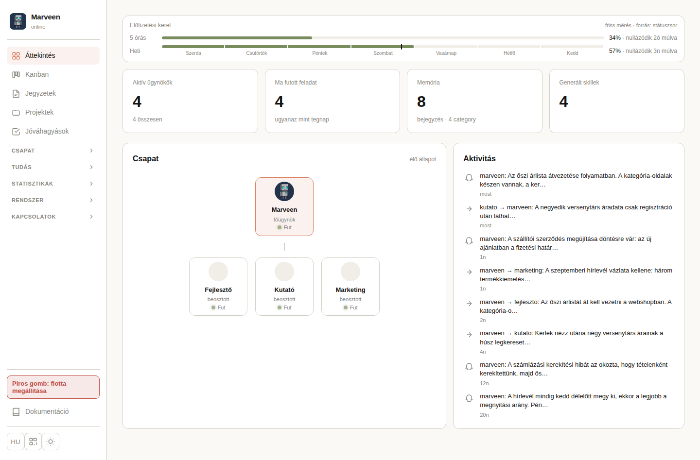
Előfizetési keret
Az oldal tetején álló sáv a Claude-előfizetés felhasználtságát mutatja, ablakonként egy-egy csíkkal: 5 órás és Heti keret, valamint, ha a fiókodnak van ilyen, a Fable (heti) keret. Minden csík mellett a felhasznált százalék és az, hogy mennyi idő múlva nullázódik a keret. A csík 60% felett figyelmeztető, 80% felett piros színre vált. A heti csík hét napra van osztva, alatta a napok neveivel, és egy jel mutatja, hol tart most a hét: így egy pillantásból látszik, hogy a hét elején vagy a végén jársz-e a kerettel.
A sáv jobb felső sarka megmondja, milyen régi a mérés és honnan származik ("forrás: státuszsor", vagy egy ügynök munkamenete). Ha a mérés elavult, vagy a keret azóta már nullázódott, a számok megmaradnak, de a csík elszürkül, és egy sor jelzi, hogy a szám nem friss: egy órákkal korábbi zöld csík nem jelenti, hogy most is rendben vagy. Ha még nincs mérés (például friss telepítésen, az első ügynök-válasz előtt, vagy API-kulcsos fióknál, aminek nincs ilyen kerete), a sáv számok helyett egy mondatban mondja meg, miért üres.
"stateObserver": true az ügynök agent-config.json fájljában), majd indítsd újra az ügynököt.
Statisztika-csempék
| Csempe | Mit mutat |
|---|---|
| Aktív ügynökök | Hány ügynök folyamatban lévő munkamenete fut éppen, a beállított ügynökök teljes létszámához képest (pl. "4 összesen"). |
| Ma futott feladat | Hány feladat futott le a mai napon, és zárójelben az eltérés a tegnapi naphoz képest (pl. "-29 a tegnapihoz"). |
| Memória | Az összes elmentett memória-bejegyzés száma, és hány kategóriába (hot/warm/cold/shared) vannak szétosztva. |
| Generált skillek | A rendszer öntanulásából (ismétlődő munkafolyamatokból) eddig létrehozott, újrafelhasználható skillek száma, és hány készült ma. |
Csapat kártya
A főügynök és a beosztott ügynökök hierarchiája fastruktúraként, valós idejű státusszal (Fut / Leállva) minden dobozon. Ugyanezt a nézetet mutatja az Ügynökök oldal "Org chart" nézete is.
Aktivitás kártya
A legutóbbi ügynök-események listája relatív időbélyeggel ("4p", "26p"): a legfrissebb memória-mentések és az ügynökök egymásnak küldött üzenetei (feladat-delegálások), legfeljebb nyolc. Ez eseménynapló, arról szól, mi történt. Azt, hogy egy ügynök ebben a pillanatban mit csinál, az Ügynökök oldal Aktivitás nézete mutatja.
Kanban kanban
A csapat teljes feladatlistája egy táblán, státusz szerint oszlopokba rendezve. Ide kerül minden projekt-feladat: a főügynök kártyaként rögzíti, kioszt egy felelősnek, aki a kártyán állapotot vált és kommentál.
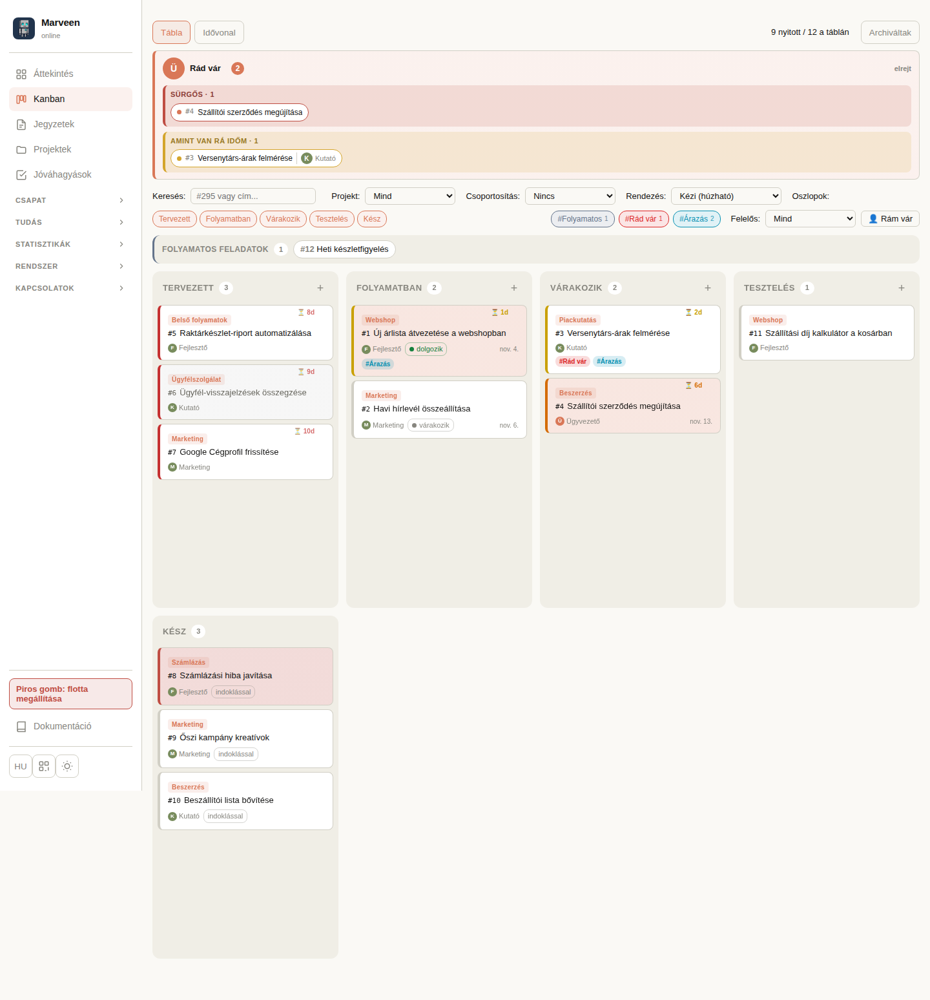
Nézetváltás (fenti gombsor)
Tábla
Az alap, oszlopos nézet, ez az alapértelmezett.
Idővonal
Gantt-szerű, időrendi nézet a határidős kártyákról, heti/havi/negyedéves szűréssel és "csak lejárt/közelgő" jelölővel. Egy kártya sávja a tervezett kezdésnél indul, ha a kártyán meg van adva "Kezdés", különben a létrehozás napján.
Archiváltak
Átvált egy külön oldalra, lásd lent: Archivált kártyák.
Oszlopok és kártyák
A nézetváltó sor jobb oldalán az összesítés: hány nyitott kártya van a táblán az összeshez képest (pl. "9 nyitott / 12 a táblán"), és ha egy szűrő elrejt kártyákat, az is, hány látszik.
Öt oszlop: Tervezett, Folyamatban, Várakozik, Tesztelés, Kész. Minden oszlop fejlécén a kártyaszám látszik; ha az adminisztrátor korlátot (WIP-limitet) állított be az oszlopra, a szám 4/5 formátumra vált, és a kihasználtság szerint színeződik (szürke → sárga → narancs → piros, villogva, ha túllépted).
A kártyák háttere a prioritás szerint színeződik: a sürgős pirosas, a magas narancsos, a normál semleges, az alacsony halványszürke.
Új kártya ("+" gomb az oszlopfejlécben)
Egy új kártyát hoz létre abban az oszlopban (státuszban), ahol a gombra kattintottál. A cím és a leírás mellett megadható a felelős, a prioritás, a projekt, a Kezdés (tervezett kezdőnap), a Határidő és a Tesztelési lépések (mit kell ellenőrizni, mielőtt a kártya lezárható). Ezek közül csak a cím kötelező.
Kártya mozgatása (drag & drop)
Egy kártyát másik oszlopba húzva megváltoztatja annak státuszát. Húzni csak a "Kézi (húzható)" rendezésben lehet (lásd lent); más rendezésnél a státusz a kártya részletező ablakában váltható.
Lezárás indoklással
Amikor egy ügynök zár le egy kártyát, meg kell adnia, mivel ellenőrizte a munkát (teszt eredménye, visszaolvasott fájl, mért szám). Indoklás nélkül a kártya nem Kész, hanem Tesztelés állapotba kerül, hogy valaki átnézze. Az indoklással lezárt kártyán egy "indoklással" jelölés áll, a részletező ablakban pedig az "Indoklás" szakaszban olvasható a szöveg. Amikor te zársz le egy kártyát a Dashboardon, indoklás nem kell.
Élő ügynök-állapot a kártyán
A Folyamatban lévő, ügynökhöz rendelt kártyák alján egy kis jelvény mutatja, mit csinál épp a felelős ügynök: "dolgozik", "várakozik", "elakadt?" (dolgozik, de negyed órája nem adott életjelet), "leállt", "leállítva", "nem elérhető", vagy "máshol dolgozik: #N", ha éppen egy másik kártyán dolgozik. Az állapot az ügynökhöz tartozik, ezért egy ügynök két kártyáján ugyanaz a jelvény áll.
Kártya részletei
Egy kártyára kattintva nyílik a részletező ablak. A fejlécben az azonosító, az állapot, a felelős, a prioritás, a projekt, a kezdés és a határidő; az állapot és a felelős itt közvetlenül átírható. Alatta a Folyamatban töltött idő (összesen mennyi ideig állt a kártya a Folyamatban oszlopban; ez felső becslés, nem a ténylegesen ledolgozott idő), a leírás, a tesztelési lépések (Tesztelés állapotban kiemelve), a címkék, valamint a Token szakasz: mennyit fogyasztott a felelős ügynök, amíg a kártya Folyamatban volt, modellenként. Ha az ügynöknek közben más kártyája is folyamatban volt, a szakasz jelzi, hogy a szám felső becslés.
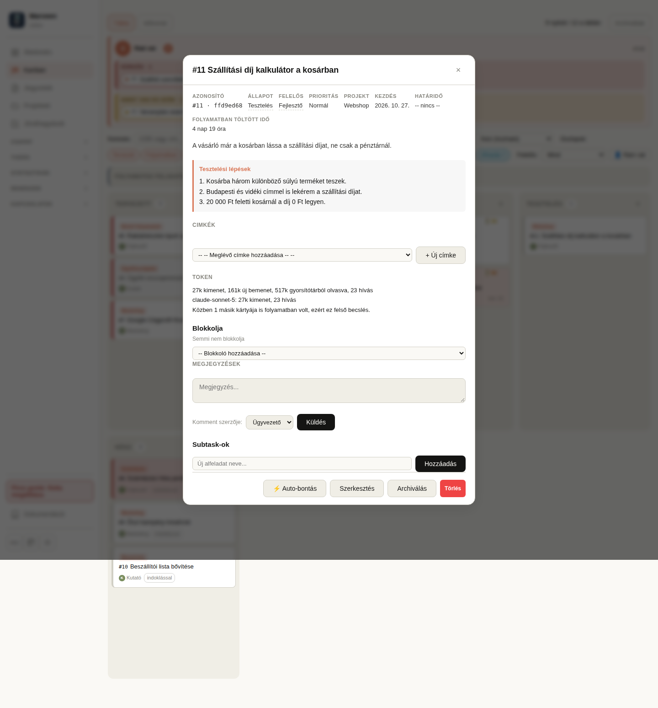
Alfeladat hozzáadása
Egy szülő-kártya (nem alfeladat) részletező nézetében "Új alfeladat" formmal vehető fel.
Alfeladat törlése
Az alfeladat sorában megjelenő Törlés gombbal, megerősítő párbeszéd után.
Címkék
A kártya részletező nézetében szín-kódolt címkék rendelhetők hozzá (meglévő kiválasztásával, vagy új létrehozásával), és bármelyik egy gombbal levehető. A kártyák alján legfeljebb 3 pille jelenik meg, a többit egy "+N" jelvény takarja.
Blokkolók (melyik kártyára vár)
A kártya részletező nézetének "Blokkolja" szakaszában megadhatod, mely más kártyák lezárására vár ez a kártya: a legördülő listából egy nyitott kártyát választva azonnal hozzáadódik, a sor végi "×" gombbal levehető. Ha a kártyára más kártyák várnak, azok egy külön "Erre a kártyára várnak" listában látszanak; ez csak olvasható, egy kapcsolatot mindig annál a kártyánál veszel le, amelyik vár. A táblán a blokkolt kártya alján "⛔ blokkolva" jelvény áll (több blokkolónál a számukkal), amíg legalább egy blokkolója nincs Kész állapotban. A már lezárt blokkoló a listában megmarad, áthúzva és halványan, így egy pillantásból látszik, vár-e még a kártya valamire.
Csoportosítás és szűrés
A tábla feletti vezérlősorban: Keresés (egy szám, pl. "295" vagy "#295", pontosan azt a kártyát hozza; bármi más a címekben keres; az Archiváltak között nem keres), Projekt szűrő (legördülő), Csoportosítás (Nincs / Felelős szerint / Prioritás szerint, az utóbbi kettő vízszintes sávokra, ún. swimlane-ekre bontja a táblát), Oszlopok chipek (mely oszlopok legyenek láthatók), Felelős szűrő, a "Rám vár" gomb (egy kattintással csak azokat a kártyákat mutatja, amelyek felelőse a rendszer gazdája, vagyis te; újra kattintva kikapcsol), és a címke gyors-szűrők. A Rendezés legördülő (Kézi (húzható), szám szerint növekvő vagy csökkenő, legrégebbi vagy legújabb elöl, utoljára módosított elöl) a kártyák sorrendjét állítja az oszlopokon belül. A választásaid a keresés kivételével a böngésződben megmaradnak, nem kell minden megnyitáskor újra beállítani.
"Rád vár" sáv
A szűrők felett egy külön sáv gyűjti, ami rád, a rendszer gazdájára vár: a hozzád rendelt nyitott kártyákat, és bármelyik ügynök olyan kártyáját, amin "Rád vár" címke áll. A kártyák prioritás szerint három csoportban látszanak: "Sürgős", "Amint van rá időm" és "Ráér". A sáv a szűrőktől és a keresőtől függetlenül mindig mindent mutat, egy chipre kattintva megnyílik a kártya, az "elrejt" gombbal összecsukható. Ha semmi nem vár rád, a sáv nem jelenik meg. Ez nem ugyanaz, mint a vezérlősor "Rám vár" gombja: az a táblát szűri a hozzád rendelt kártyákra.
Folyamatos feladatok
A "Folyamatos" címkéjű nyitott kártyák (rendszeresen ismétlődő, sosem igazán "kész" munkák) nem az oszlopokban, hanem a tábla feletti "Folyamatos feladatok" sávban jelennek meg, hogy ne foglalják a helyet. A kártya állapota ettől nem változik, és egy chipre kattintva ugyanúgy megnyílik.
Beakadt és öregedő kártyák
Minden nem lezárt kártyán automatikusan megjelenik, ha régóta nem mozdult: bal oldali színes csík (sárga = 1 napja, narancs = 3 napja, piros villogó = 1 hete nem váltott státuszt) és egy homokóra-jelvény ("⏳ 4d") a jobb felső sarokban. Az idő a kártya utolsó státuszváltásától számít, nem az utolsó módosítástól: egy új megjegyzés vagy leírás-javítás nem "fiatalítja meg" a kártyát, csak az, ha ténylegesen másik oszlopba kerül. A jelvény fölé állva a pontos időpont látszik.
Automatikus archiválás
A rendszer óránként magától átnézi a táblát.
Alfejezet: Archivált kártyák
Elérés: a Kanban tábla tetején az "Archiváltak" gomb (nincs önálló bal oldali menüpontja).
A táblán már nem látható (mert automatikusan vagy kézzel archivált), de nem törölt kártyák dedikált, kereshető nézete.
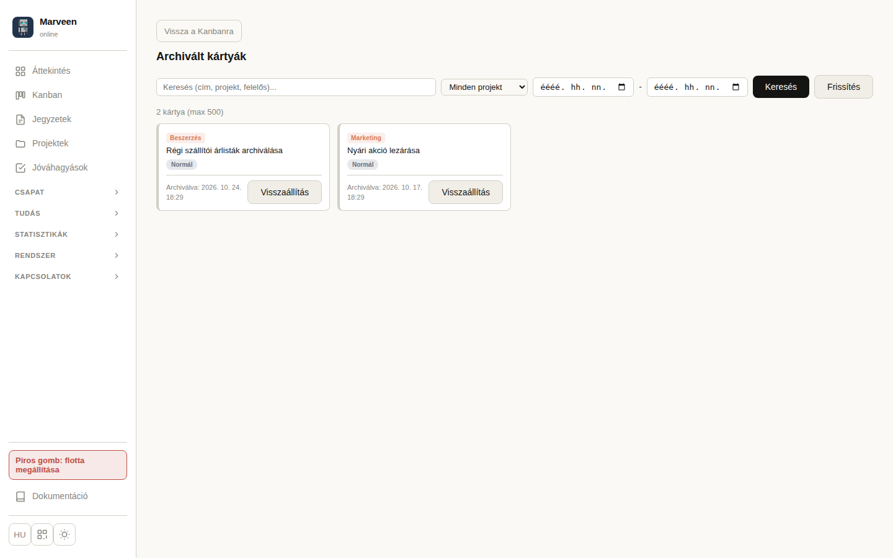
Keresés és szűrők
Szabad szöveges keresés (cím, projekt, felelős), valamint projekt, címke és archiválási dátumtartomány szerinti szűrés.
Visszaállítás
Minden sorban egy "Visszaállítás" gomb.
Jegyzetek notes
A csapat apró teendőinek közös listája, a Kanbanon kívül: amire nem érdemes kártyát nyitni ("holnap nézd meg, lefutott-e", "kérj két friss fotót"), de nem szabad elfelejteni. Az ügynökök is olvassák és írják.
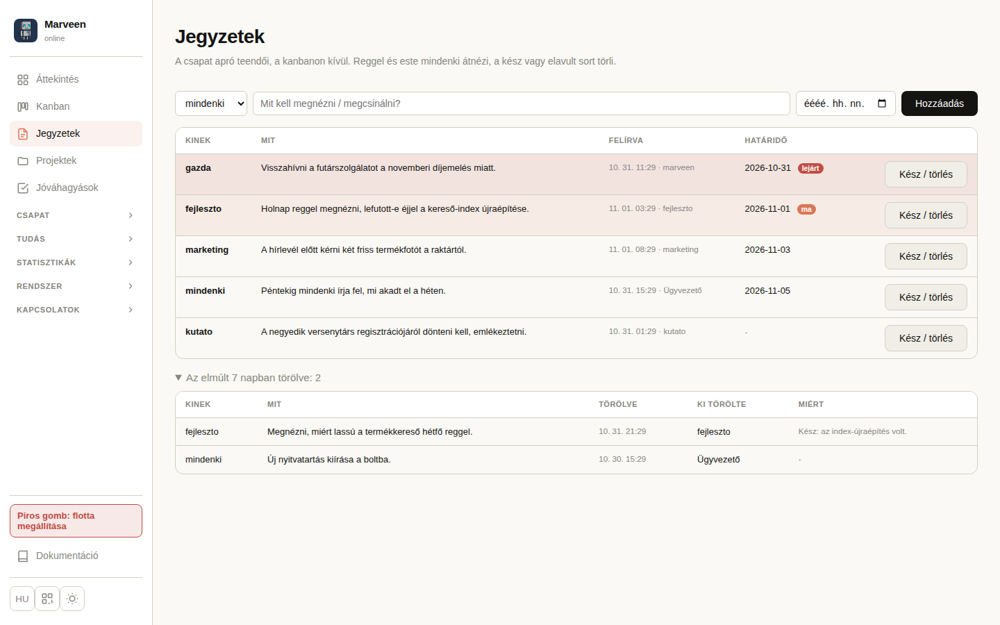
Új jegyzet
Egy sorban: kinek szól (mindenki, gazda, azaz te, vagy egy kiválasztott ügynök), mit kell megnézni vagy megcsinálni, és opcionálisan egy határidő. A "Hozzáadás" gomb azonnal felveszi.
Nyitott jegyzetek
Táblázat: Kinek, Mit, Felírva (mikor és ki írta), Határidő. A sorrend határidő szerinti, a határidő nélküliek a végén. A lejárt határidejű sor mellett piros "lejárt", a mai mellett "ma" jelölés áll, és a sor kiemelt háttérrel látszik.
Kész / törlés
A sor végi gomb megkérdezi, miért törlöd (nem kötelező megadni).
Projektek projects
Ember-nyelvű áttekintés a Kanban-táblán élő projektekről: projektenként egy kártya, rajta a haladás, egy rövid leírás, és hogy ki dolgozik rajta. Ez a nézet arra való, hogy kártyák böngészése nélkül lásd, hol tart egy-egy téma.
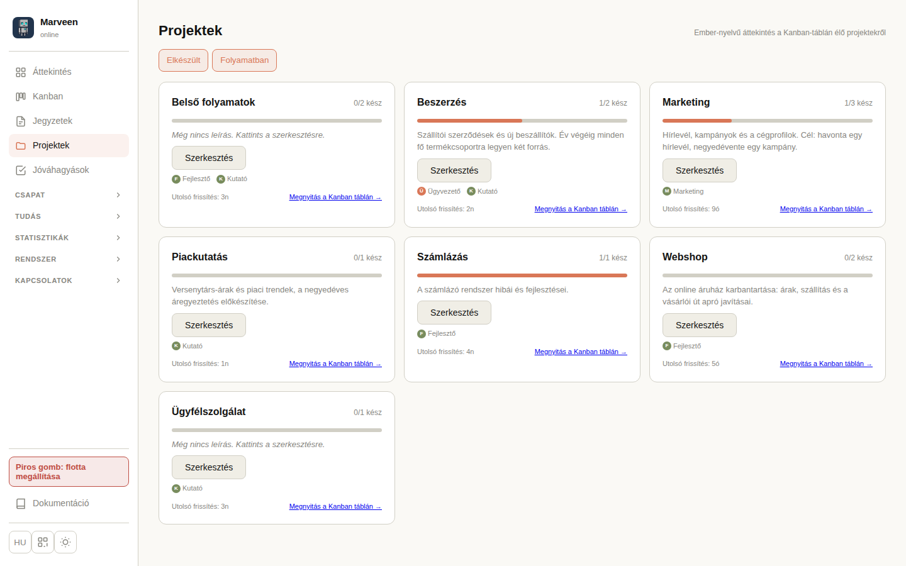
Itt nem lehet projektet létrehozni vagy törölni: egy projekt pontosan addig látszik, amíg legalább egy nem archivált Kanban-kártyán szerepel a neve a Projekt mezőben. Ha egy projekt minden kártyája archiválódik, a projekt eltűnik az oldalról (a leírása megmarad, és visszajön, ha újra lesz kártyája).
Egy projekt kártyája
| Elem | Jelentés |
|---|---|
| "x/y kész" és a csík | A projekt nem archivált kártyái közül hány van Kész állapotban. Mindig élőben számolódik a Kanbanból. |
| Leírás | Egy-két mondat arról, miről szól a projekt. Ha még nincs, dőlt betűs felirat jelzi. |
| Dolgozik rajta | Akiknek Folyamatban vagy Tesztelés állapotú kártyájuk van a projektben; ha ilyen nincs, a projekt összes eddigi felelőse. |
| Utolsó frissítés | Mikor módosult utoljára a projekt valamelyik kártyája. |
Felül az Elkészült és a Folyamatban gomb kapcsolja ki-be a kész (minden kártyájuk Kész), illetve a még nyitott projektek megjelenítését.
Szerkesztés
A projekt leírását írhatod át; a Mentés gombbal kerül el, a Mégse eldobja a változtatást.
Jóváhagyások approvals
Az ügynökök jóváhagyást igénylő kéréseinek gyűjtőhelye. Ha egy ügynök egy olyan kategóriájú műveletet szeretne végrehajtani, amit a beállított autonómia-szint szerint előbb jóvá kell hagyatnia, itt jelenik meg a kérés, határidővel.
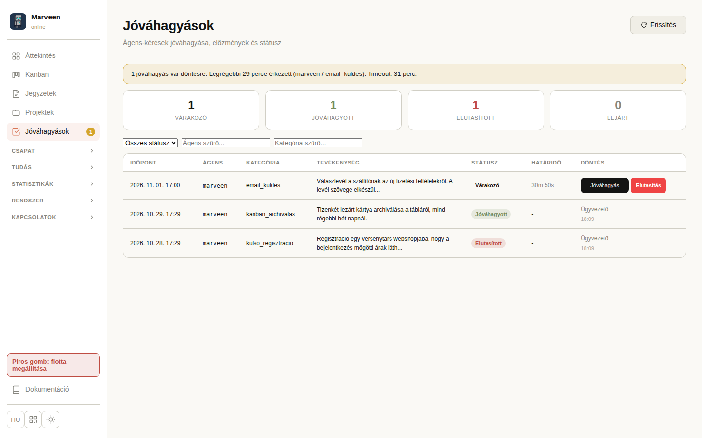
Kérés nemcsak ügynöktől jöhet: ha a Memória oldalon törölsz egy emléket, a törlés is itt vár jóváhagyásra (adat-törlés kategóriában). Ha egy kérést a csevegésben már jóváhagytál, és a főügynök rögzíti, a sor eleve Jóváhagyott állapotban jelenik meg.
Statisztika-csempék
Négy szám: Várakozó, Jóváhagyott, Elutasított, Lejárt. A várakozó darabszám a bal oldali menü "Jóváhagyások" pontján is megjelenik piros jelvényként.
Figyelmeztető sáv
Ha van legalább egy várakozó kérés, egy sáv jelenik meg a statisztikák felett: melyik ügynöktől, milyen kategóriában, mióta vár, és mennyi ideje van hátra a döntésig.
Szűrők
Státusz (Várakozó / Jóváhagyott / Elutasított / Lejárt), Ügynök és Kategória szerint szűkíthető a lista.
A táblázat oszlopai
| Oszlop | Jelentés |
|---|---|
| Időpont | Mikor érkezett a kérés. |
| Ágens | Melyik ügynök kéri a jóváhagyást. |
| Kategória | A kért művelet típusa (pl. egy adott autonómia-kategória kulcsa). |
| Tevékenység | Az ügynök saját szavaival leírt indoklás, mit szeretne tenni és miért. Ha hosszú, csonkolva jelenik meg, egérrel fölé állva a teljes szöveg olvasható. |
| Státusz | Várakozó / Jóváhagyott / Elutasított / Lejárt, színes jelvénnyel. |
| Határidő | Visszaszámláló a döntésig hátralévő időből; öt percnél kevesebb esetén pirosra vált. |
| Döntés | Várakozó soroknál a Jóváhagyás/Elutasítás gombok, lezárt soroknál ki döntötte el és mikor. |
Jóváhagyás
A sor "Jóváhagyás" gombja.
Elutasítás
A sor "Elutasítás" gombja.
Ügynökök agents
A teljes ügynök-flotta kezelése egy helyen: kik dolgoznak, milyen szerepben, milyen modellel, és élnek-e éppen. Innen hozol létre új ügynököt, itt állítod le/indítod el, és itt viszed át egyik gépről a másikra. (A menüpont neve Ügynökök, az oldal fejlécében "Csapat" áll.)
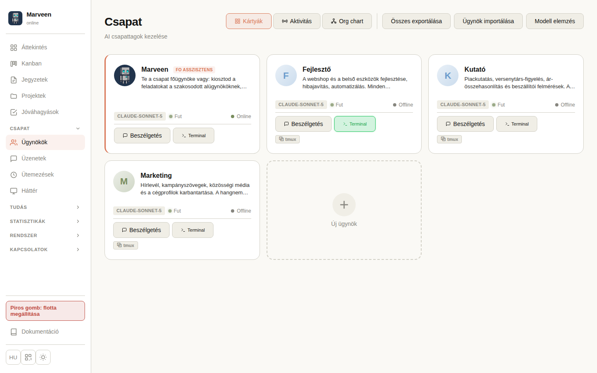
Három nézet
A fejléc nézetváltójával: Kártyák, Aktivitás és Org chart. Az első kettő ugyanaz a kártyarács, csak a kártyák alsó része mást mutat; az Org chart külön elrendezés. A választott nézet megmarad, ha közben más oldalra lépsz, egészen az oldal újratöltéséig.
Kártyák
Minden ügynök egy kártya: avatar, név, rövid szerep-leírás, a beállított modell, a futási állapot (Fut / Leállva) és a csatorna-kapcsolat (Online / Offline). Ha a kontextus-figyelés mérni tudja, egy százalékos jelvény mutatja, mennyire telt meg az ügynök munkamenetének kontextusa (90% felett figyelmeztető, 97% felett piros színnel; ugyanez a szám alapján lép közbe a kontextus-figyelő). Ha a kontextus-figyelő éppen beavatkozik, egy rövid fázis-jelvény is megjelenik ("handoff", "restarting", vagy "cooldown" a hátralévő percekkel), fölé állva egy mondat elmagyarázza. A "Beszélgetés" gomb az ügynök munkamenetének olvasható, csak-olvasható átiratát nyitja meg. A "Terminal" gomb zöldre vált, amíg az ügynök éppen dolgozik. Kártyára kattintva a részletező ablak nyílik. A rácsban itt van az "Új ügynök" kártya is.
~/.claude/settings.json) env blokkja egy hitelesítő kulcsot ad át ennek az ügynöknek is, ami felülírhatja az ügynök saját belépését. A kulcsot onnan érdemes eltávolítani.
Aktivitás
Élő állapotkép minden ügynökről, 3 másodpercenként frissítve: a kártya alsó része a modell és a státuszok helyett az ügynök pillanatnyi állapotát és a munkamenete utolsó néhány sorát mutatja. Ez korábban önálló "Aktivitás" menüpont volt, mára ide lett összevonva. Ne keverd össze az Áttekintés Aktivitás-kártyájával: az eseménynapló (mi történt), ez itt a jelenlegi állapot.
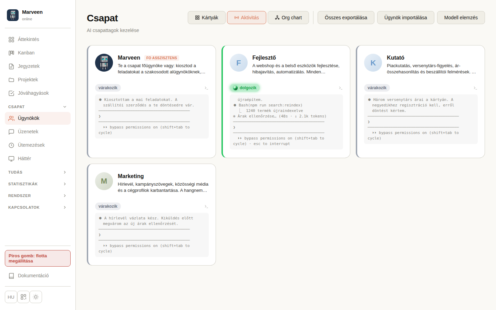
| Jelvény | Jelentés |
|---|---|
| dolgozik | Az ügynök éppen aktívan feldolgoz valamit (a jelvényen egy lüktető pont is látszik). |
| várakozik | Fut, de éppen nem csinál semmit. |
| alügynökök dolgoznak (N) | Az ügynök maga éppen nem dolgozik, de a háttérben N saját al-ügynöke fut; ha közben üzenet is vár rá, a jelvény azt is mutatja. |
| ismeretlen | A rendszer nem tudta megállapítani az állapotot a munkamenet tartalmából. |
| hiba | Hiba látszik az ügynök munkamenetén. |
| halott | A munkamenet keretje él, de az ügynök programja kilépett belőle, tehát semmire nem válaszol. Indítsd újra az ügynököt. |
| leállt | Az ügynök munkamenete nem fut. |
Ha egy ügynök nem a szokásos, önállóan dolgozó módban van (például minden lépésnél megerősítést kérő módban ragadt), egy külön jelvény hívja fel erre a figyelmet: ilyenkor az ügynök tétlennek látszhat, miközben valójában jóváhagyásra vár.
Ebben a nézetben egy futó ügynök kártyájára kattintva nem a részletező ablak, hanem egy élő terminál-ablak nyílik, ami az ügynök tényleges munkamenetét mutatja, valós időben. Leállított ügynök kártyája ebben a nézetben nem kattintható.
Org chart
Ugyanaz a hierarchikus fastruktúra, amit az Áttekintés Csapat kártyája is mutat: a főügynök és a beosztott ügynökök jelentési viszonyai, ügynökönként a futási állapottal. Az éppen dolgozó ügynök doboza kiemelt kerettel látszik. Ez korábban önálló "Csapat" menüpont volt, mára ide lett összevonva. Egy beosztott ügynök dobozát egérrel megfogva és egy másik ügynökre húzva átrendezheted, kinek jelentsen.
Új ügynök létrehozása
Az "Új ügynök" kártyára kattintva egy varázsló kéri be a nevet, a rövid leírást (szerepet), a modellt és egy avatart. Ezekből a rendszer legenerálja az ügynök személyiségét (CLAUDE.md és SOUL.md fájlok).
Ügynök részletei
Egy kártyára kattintva (a Kártyák nézetben) nyílik a részletező ablak, öt fülre bontva: Áttekintés (alapadatok), Beállítások (modell, újraindítási szabályok, kontextus-figyelő), Csatorna (Telegram/Slack/Teams párosítás), Skillek, és Csapat (kinek a beosztottja).
Csatorna fül: mentés és kapcsolat-teszt
Itt kötöd be az ügynök saját csevegő-csatornáját. A "Kapcsolat tesztelése" gomb ténylegesen bejelentkezik a szolgáltatóhoz: Slacknél azt is jelzi, ha az alkalmazásból hiányzik egy szükséges jogosultság, Teamsnél pedig a Microsoft felé ellenőrzi a bot hitelesítő adatait, és figyelmeztet, ha a titok hamarosan lejár.
Modell kiválasztása (Beállítások fül)
A legördülő lista csoportokban kínálja a választható modelleket: Claude (felhő), és ha be vannak állítva, a DeepSeek, MiniMax, OpenRouter, Ollama és az Egyéni provider csoport. Egyéni providernél a listában a providert választod ki, a modell azonosítóját pedig egy alatta megjelenő mezőbe írod be; magát a providert a Beállítások oldal Provider-ok fülén veszed fel.
A Claude-modellek közül csak az választható ki, amit a gépre telepített Claude Code program el is tud indítani: amelyikhez újabb program kell, az szürkén, a szükséges verzióval jelölve jelenik meg. Ha a telepített verziót a rendszer nem tudja megmérni, a lista nem szűr, és egy sor figyelmeztet, hogy egy régebbi programon nem minden modell indul el. Egy ügynök éppen használt modellje sosem szürkül ki, így a mentés nem írja át észrevétlenül.
Kontextus-limit alapú újraindítás (Beállítások fül)
Egy hosszan futó ügynök munkamenete idővel megtelik (a "kontextus" az, amit az ügynök a beszélgetésből egyszerre fejben tud tartani). Két védelmi szint van. A saturation net mindig aktív és nem kapcsolható ki: ha a kontextus eléri a 100%-ot, az ügynök automatikusan újraindul. A Proaktív limit-figyelő bekapcsolható: ha a kontextus eléri a beállított küszöböt (alapból 90%), az ügynök előbb egy átadó jegyzetet (HANDOFF.md) ír a félbehagyott munkáról, majd friss kontextussal folytatja. Beállítható még a token-limit, a kényszer-újraindítás küszöbe (alapból 97%, nem lehet kisebb a handoff-küszöbnél), a két beavatkozás közti hűtési idő (alapból 15 perc), és a "Haladó beállítások" alatt az, hogy meddig várjon a rendszer a jegyzetre (alapból 20 perc). Az ablak alján az aktuális állapot és a kontextus telítettsége látszik.
Indítás / Leállítás
A részletező ablak tetején.
Channels restart (csak a főügynöknél)
A főügynök részletező ablakának Áttekintés fülén egy piros gomb, a főügynök csevegő-munkamenetének kemény újraindítására, ha az beragadt.
Törlés
A részletező ablakban, egy "Ügynök törlése" megerősítő ablak után, ami név szerint megnevezi a törlendő ügynököt.
Exportálás
Egy hordozható .tar.gz csomagba menti az ügynök személyiségét és beállításait, amit egy másik gépre átvihetsz. Rákérdez, hogy a titkokat (csatorna-token, párosítási állapot) is vegye-e bele.
Importálás
A Kártyák nézet fejlécében: egy korábban exportált csomag (egy ügynöké vagy az egész flottáé) visszatölthető.
Modell elemzés
Kiértékeli minden ügynökre, hogy a hozzárendelt Claude-modell (pl. Sonnet, Haiku, Opus) összhangban van-e a tényleges terheléssel (token-fogyasztás, kanban-terhelés, integrációk mélysége), és javasol egy megfelelőbb modellt, ha indokolt.
Üzenetek messages
Az ügynökök egymás közötti üzenetváltásának megtekintése, és közvetlen üzenetküldés egy kiválasztott ügynöknek, chat-szerű felületen.
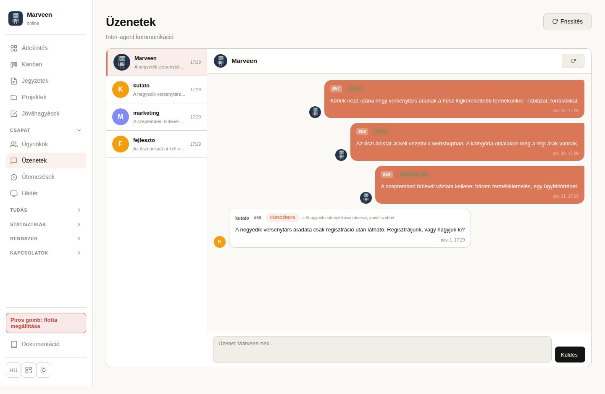
Bal oldalon az ügynökök listája, jobb oldalon a kiválasztott ügynökkel folytatott beszélgetés-szál. Egy ügynökre kattintva megnyílik a vele (és mások által neki) küldött üzenetek időrendi listája.
Üzenet küldése
A szál alján egy szövegmező és a Küldés gomb (vagy Ctrl+Enter). Az üzenet a te nevedben megy, a címzett ügynök tőled érkezőként látja.
Minden elküldött üzenet buborékján egy állapotjelvény mutatja, hol tart: "függőben" (még nem ért célba), "kézbesítve", "kész" (a címzett lezárta) vagy "hibás". A főügynöknek küldött, épp függő üzenetnél egy sor jelzi, hogy a főügynök automatikusan átveszi, amint szabad.
Ütemezések tasks
Időzített, visszatérő feladatok kezelése: mikor és melyik ügynök fusson le, milyen utasítással. Ez az az oldal, ahol az automatikus napi összefoglalókat, emlékeztetőket és rendszeres ellenőrzéseket állítod be.
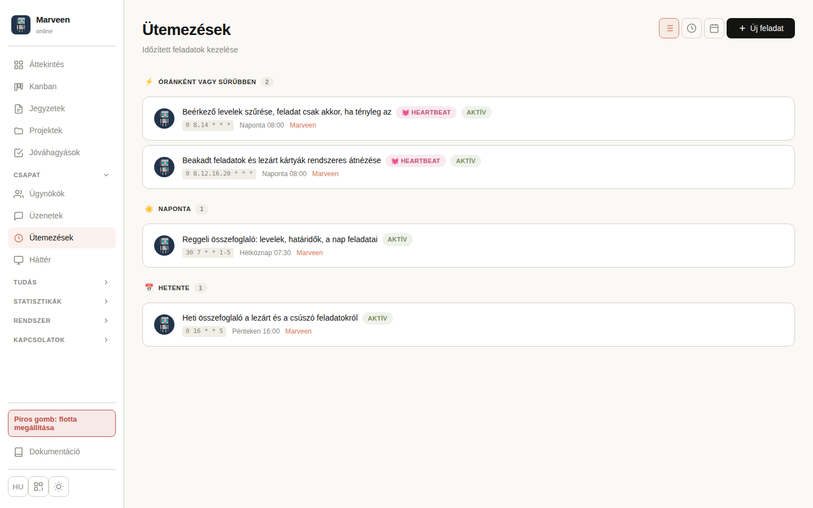
Három nézet
Lista, Napi idővonal és Heti nézet közül választhatsz ugyanarra az adatra, a fejléc gombjaival.
Két feladattípus
| Típus | Viselkedés |
|---|---|
| Feladat | Minden lefutás után jelentést kapsz az eredményről. |
| Heartbeat | Csendes háttér-ellenőrzés: az ügynök csak akkor szól, ha talál valami fontosat vagy sürgőset, egyébként nem küld semmit. |
Heartbeat típusnál előre elkészített sablonok közül is választhatsz (pl. naptár-ellenőrzés, email-ellenőrzés, kanban-határidők, vagy mindhárom együtt), amik kitöltik az utasítást és az ütemezést, de utólag szabadon szerkesztheted.
Új feladat / szerkesztés
A varázslóban megadod a nevet, a felelős ügynököt, a pontos utasítást (mit ellenőrizzen vagy csináljon), és az ütemezést (naponta, hétköznap, heti egy adott napon, vagy egyéni cron-kifejezéssel). Az időpontok a telepítés beállított időzónájában értendők. A "Haladó beállítások" alatt megadható, hogy a feladat maradjon ki, ha az ügynök épp foglalt, vagy épp ellenkezőleg, foglaltság esetén is menjen.
node dist/web/schedule-registry-cli.js register <név>), vagy a feladatot törölni és újra létrehozni.
Egy sor gombjai
Futtatás most
Szüneteltetés / Folytatás
Törlés
Előzmények
Megmutatja a feladat korábbi lefutásait és azok eredményét.
Háttér bgTasks
Egyszeri, hosszabb ideig tartó feladatok indítása leválasztott (háttér-) módban: elindítod, közben mással foglalkozhatsz, és amikor kész, a szokásos csatornán (Telegram/Slack) is jelez. Hosszú kutatáshoz, batch-feldolgozáshoz, buildhez való, nem interaktív, gyakori döntést igénylő munkához.
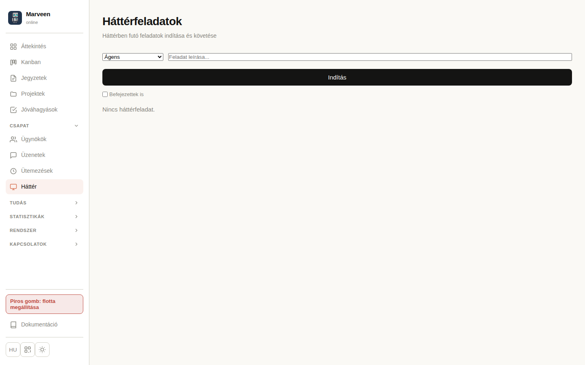
Új háttér-feladat indítása
Válaszd ki a felelős ügynököt, írd be a feladat szövegét, majd Indítás.
Lista
A futó (és a "Befejezettek is" bejelölésével a lezárt) feladatok listája, állapottal: Fut, Kész, Hiba vagy Időtúllépés.
Megtekintés
Megnyitja a feladat eddigi vagy végleges kimenetét egy ablakban.
Megszakítás
A futó feladat sorában a "Leállítás" gomb, megerősítő párbeszéd után.
Memória memories
A csapat tudásbázisának böngészése és keresése. Az ügynökök maguktól mentik ide a fontos döntéseket, preferenciákat és tanulságokat, réteges rendszerben, hogy munkamenetek között se felejtsenek.
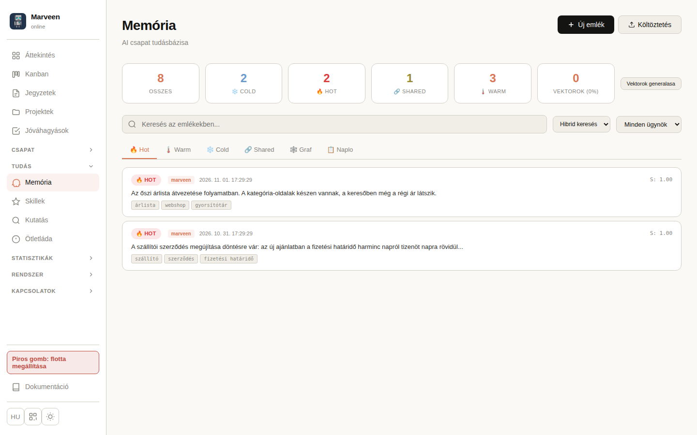
A négy réteg (fül)
| Réteg | Mit tartalmaz |
|---|---|
| Hot | Ami éppen most zajlik: aktív feladatok, függő döntések. |
| Warm | Stabil tudás: preferenciák, konfiguráció, projekt-kontextus. |
| Cold | Hosszú távú tanulságok, korábbi döntések, archívum. Ide kerül automatikusan az ügynökök napi naplójának minden bejegyzése is, "[Napló ÉÉÉÉ-HH-NN ÓÓ:PP]" kezdettel, hogy a naplóban is lehessen keresni. |
| Shared | Más ügynököknek is releváns információ. |
Ezen felül két további fül: Gráf, ami vizuálisan mutatja az emlékek kulcsszó-kapcsolatait az ügynökök között, és Napló, ami az ügynökök napi összefoglalóit listázza. Ez a fül nem azonos a Rendszer csoport Napló menüpontjával: az a rendszer eseménynaplója (beállítás-változások, fájl-események), ez itt az ügynökök saját, napi munkanaplója.
Keresés és szűrés
A keresőmező kétféle módban működik: Hibrid (kulcsszó és jelentés szerint egyszerre keres, akkor is talál, ha nem pontosan azt a szót írod be, ami az emlékben szerepel) és Kulcsszavas (klasszikus, pontos szóegyezés). Ügynök szerint is szűrhetsz.
A keresés szándékosan engedékeny: ha egyetlen emlék sem illeszkedik úgy, ahogy kerested, a rendszer elhagyja a nem talált szavakat, és azt mutatja, amit a maradék szavak hoznak. Ilyenkor a lista fölött egy kiemelt doboz jelzi: "Ez mentett közelítés, nem találat." Ha ezt látod, a lista nem bizonyítja, hogy van emlék arról, amit kerestél, csak a hozzá legközelebb állókat mutatja. Valódi találatnál a doboz nem jelenik meg.
Új emlék
Az "Új emlék" gombbal kézzel is felvehetsz egy bejegyzést egy ügynökhöz, réteg és kulcsszavak megadásával.
Egy emlék szerkesztése és törlése
Egy emlékre kattintva kinyílik a teljes szövege, alatta a Szerkesztés és a Törlés gombbal. A Szerkesztés ugyanazt az űrlapot nyitja meg, mint az új emlék, kitöltve.
Törlés (jóváhagyással)
Az adat-törlés alapbeállítás szerint jóváhagyáshoz kötött, ezért a törlés két lépésben történik. Az első kattintás (és a megerősítés) után a rendszer még nem töröl, hanem egy kérést tesz a Jóváhagyások oldalra, és egy üzenet jelzi: "A törlés jóváhagyásra vár". A kérés jóváhagyása után ugyanarra a Törlés gombra kell újra kattintanod, ekkor törlődik az emlék.
Költöztetés (import)
Korábbi beszélgetések vagy jegyzetek fájlból tömegesen betölthetők egy kiválasztott ügynök memóriájába.
Skillek skills
A rendszer által (vagy kézzel) létrehozott, újrafelhasználható munkafolyamat-leírások katalógusa. Egy skill lényegében egy elmentett "tudja, hogyan kell csinálni" recept, amit egy ügynök felismer és automatikusan alkalmaz, ha hasonló helyzetbe kerül.
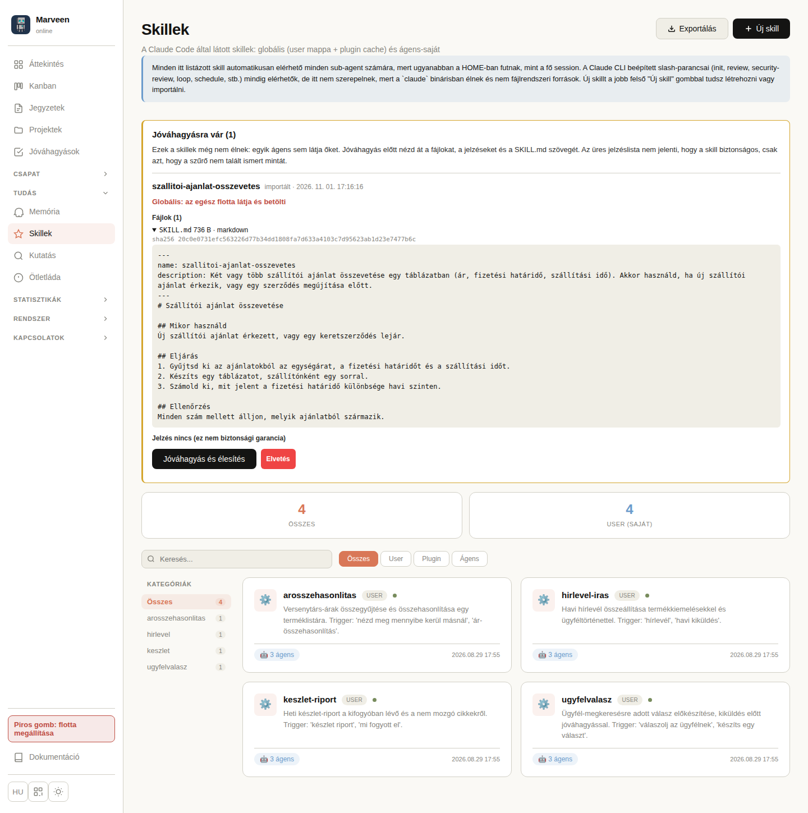
Globális és ügynök-szintű skillek
A globális skillek minden ügynök számára elérhetők, az ügynök-szintűek csak az adott ügynöknél élnek. Bal oldalt kategória szerint szűrhetsz, a keresőmezővel név vagy leírás szerint kereshetsz.
Új skill
Kétféleképpen: a rendszerrel megíratva (név + leírás alapján) vagy egy fájl importálásával. Ugyanez érvényes az ügynökök részletező ablakának Skillek fülén felvett skillekre is.
Jóváhagyásra vár
Ha van függő skill, a lap tetején egy doboz jelenik meg ("Jóváhagyásra vár (N)"). Skillenként látszik a neve, honnan jött (importált vagy generált), és hová kerülne: "Globális: az egész flotta látja és betölti" (piros kiemeléssel), vagy csak egy megnevezett ügynökhöz. Alatta a skill összes fájlja kinyitható, teljes szöveggel; a futtatható fájlok és szkriptek külön, elöl állnak. A "Jelzések" rész kiemeli a gyanús mintákat (fájl és sor szerint); ha nincs jelzés, az sem biztonsági garancia, a szöveget érdemes elolvasni.
Jóváhagyás és élesítés
Elvetés
Törlés
Egy skill mellett a kuka-ikon, megerősítés után.
Exportálás
Az összes skillt egyetlen zip-fájlba menti, letöltésre.
Kutatás research
Az ügynökök hosszabb, csevegésbe nem férő kutatási anyagainak (piac-elemzés, versenytárs-áttekintés, incidens-diagnózis, bármi hasonló terjedelmes) olvasható tára, hogy ne kelljen a szerverre bejelentkezni egy anyagért, amit magad kértél.
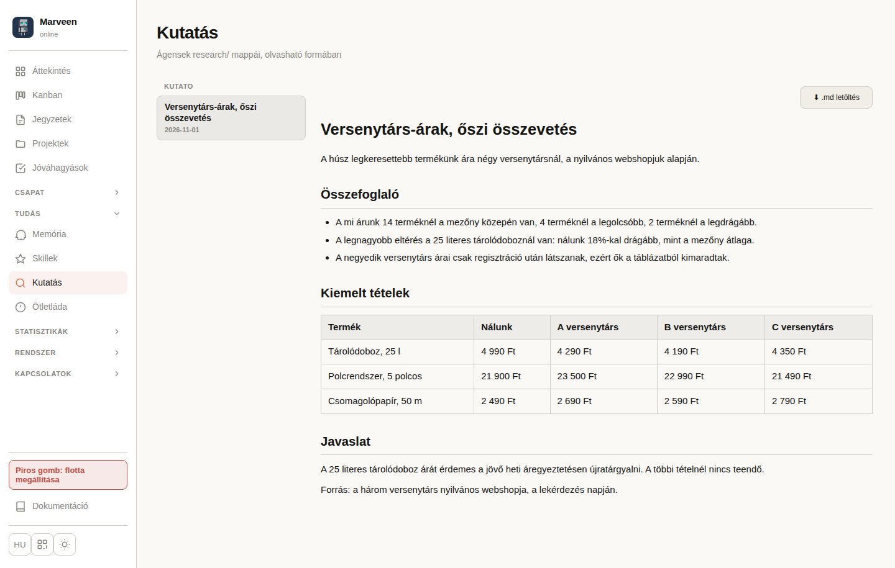
Ágensenként csoportosított lista, minden ágens neve fejlécként, alatta a saját anyagai, a legutóbb módosítottal elöl. Egy elemre kattintva jobb oldalon jelenik meg a megformázott tartalom, ahonnan az eredeti fájl le is tölthető. Amelyik ágenshez nem tartozik anyag, az meg sem jelenik.
Ötletláda ideas
Könnyű ötletgyűjtő és -priorizáló felület. Egy ötlet ide kerül be, itt értékelhető, és innen válhat kanban-feladattá, mielőtt a csapat elkezdene dolgozni rajta.
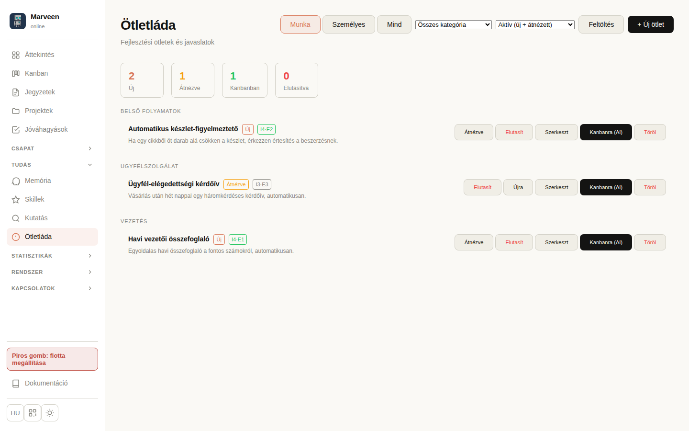
Állapotok
| Állapot | Jelentés |
|---|---|
| Új | Beérkezett, még nem értékelt. |
| Átnézve | Értékelve, de még nincs belőle kanban-kártya. |
| Kanbanban | Promótálva, már fut belőle feladat. |
| Elutasítva | Nem folytatódik tovább, de megmarad visszakereshetőnek. |
A lista alapból az "Aktív (új + átnézett)" nézetet mutatja; a fejléc állapot-szűrőjével átválthatsz egy-egy állapotra (például a Kanbanban lévőkre vagy az elutasítottakra), a kategória-szűrővel pedig egy kategóriára. Az oldal tetején egy-egy csempe mutatja az állapotonkénti darabszámot.
Munka és Személyes terület
Minden ötlet két terület egyikébe tartozik: Munka vagy Személyes. A fejléc Munka / Személyes / Mind kapcsolója szűri a listát (alapból Munka), és a választás a böngésződben megmarad. Új ötletnél a területet az űrlapon adod meg; egy meglévő ötlet a részletes nézetben az "Áthelyezés ide: ..." gombbal tehető át a másik területre, ami megerősítés nélkül, azonnal megtörténik.
Fájlból ötlet: Feltöltés
A fejléc "Feltöltés" gombjával egy vagy több fájlt választhatsz ki (PDF, kép, szöveg, Markdown, CSV, Word, Excel; fájlonként legfeljebb 20 MB). Minden fájlból külön ötlet lesz, a fájl nevével címként, "Egyéb" kategóriában, az éppen kiválasztott területen (a "Mind" nézetben a Munka területen), és a fájl csatolmányként hozzá is kerül. Ha a fájl PDF és a szövege kiolvasható, a szöveg eleje az ötlet leírásába kerül. A végén egy üzenet összesíti, hány fájl sikerült és melyik nem.
Csatolmányok
Az ötlet részletes nézetének "Csatolmányok" dobozában a "Fájl hozzáadása" gombbal további fájlok tölthetők fel egy meglévő ötlethez, a feltöltöttek a "Letöltés" gombbal menthetők le. A PDF-eknél egy "szöveg" jelölés mutatja, ha a rendszer ki tudta olvasni a tartalmukat.
Impact×Effort pontozás
Az ötlet részletes nézetében 1-5 skálán megadható, mekkora értéket teremtene (Impact) és mennyi munkát igényelne (Effort). A kettő különbsége a pontszám, ami a kártyán I{szám}·E{szám} formában jelenik meg. Ha egy ötlet pontszáma elég magas, bekerülhet a rendszer napi top-3 javaslatába a nyitott feladatok mellé.
Elutasítás
Az ötlet mellett az "Elutasít" gomb, azonnal, megerősítés nélkül vált állapotot.
Törlés
Az ötlet sorában a piros "Töröl" gomb, megerősítés után. (A megerősítő kérdés "kártyát" említ, de az ötletet törli.)
Kanbanra (AI): bontás kanban-kártyákká
Az ötlet sorában a "Kanbanra (AI)" gomb (nyitott, még nem elutasított ötletnél) AI-segítséggel alfeladatokra bontja az ötletet, felelős-javaslattal. A javaslatot jóváhagyás előtt szerkesztheted, és megadhatsz hozzá egy siker-kritériumot is ("mikor tekintjük késznek"). Az alfeladatok legnagyobb száma a Beállítások Ötletláda fülén állítható.
Videó-visszajelzés /video-review
Videók átnézése és megjegyzésekkel visszaküldése egy videókészítő ügynöknek. Ez a menüpont csak akkor jelenik meg a Tudás csoportban, ha a telepítő beállította a videók mappáját; alapállapotban nem látszik.
Külön lapon nyílik (a "Vissza a dashboardra" gomb visz vissza). Kiválasztod a videót, ha kell, egy korábbi változatát is mellé (egymás mellett vagy váltogatva), és kockánként léptetve megállsz ott, ahol változtatni kell. A képre kattintva egy pontot, húzással egy téglalapot jelölsz meg, hozzá szöveges megjegyzést írsz.
.review.json fájlba mentődnek a videók mappájában. A "Küldés" gomb üzenetet küld a beállított ügynöknek a videó és a megjegyzések helyével, és az ügynök ezzel nekiáll a javításnak. A videót magát semmi nem módosítja és nem törli..env fájlban a VIDEO_REVIEW_ROOT egy létező mappára mutasson (innen listázza az .mp4, .m4v, .mov, .webm fájlokat), a VIDEO_REVIEW_AGENT pedig annak az ügynöknek a neve legyen, aki a visszajelzést kapja. A menüpont a Dashboard újratöltése után jelenik meg.
Költségek costs
Havi költség-összefoglaló: eddig mennyi ment el, mire számíts hónap végéig, és hogyan áll ehhez képest egy beállított büdzsé.
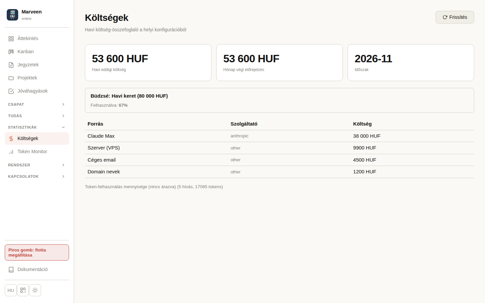
Amit látsz
| Mező | Jelentés |
|---|---|
| Havi eddigi költség | A folyó hónapban eddig elköltött összeg. |
| Hónap végi előrejelzés | Az eddigi ütem alapján becsült teljes havi költség. |
| Büdzsé | Ha van beállítva büdzsé-keret, a felhasználtsága százalékban, sárga/piros jelzéssel, ha közeledsz vagy túllépted. |
| Forrásonkénti bontás | Táblázat: melyik szolgáltatónál mennyi a költség. |
Token Monitor tokenUsage
Nyers token-fogyasztás nyomon követése ügynökönként, session-önként és időszakonként. Segít megérteni, melyik ügynök mennyit fogyaszt, mikor vannak a csúcsidőszakok, és melyik feladat volt a legdrágább.
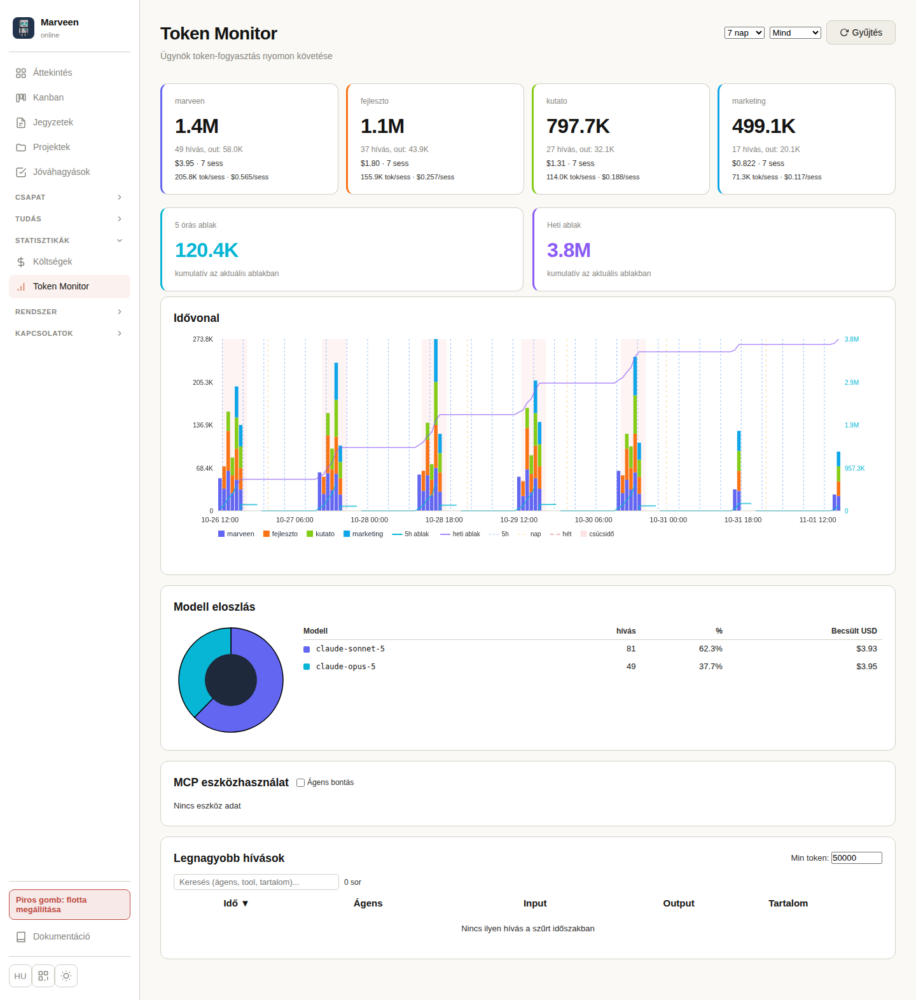
Amit látsz
Összefoglaló kártyák
Ügynökönként a teljes fogyasztás (bemenet/kimenet/cache), a hívások száma és az utolsó aktivitás időpontja. Egy kártyára kattintva az alábbi nézetek is arra az ügynökre szűkülnek. Az oldalon dollárban kijelzett költség becslés, egy beépített árlista alapján számolva: nem számla, és előfizetéses használatnál nem is kerül külön pénzbe.
Idővonal-diagram
Oszlopdiagram a fogyasztás időbeli eloszlásáról, a választott időszaktól függő bontásban.
Részletes táblázat
Egyedi hívások listája: időpont, ügynök, használt eszköz, token-bontás, tartalom-előnézet.
Szűrők
Időszak (1 óra / 24 óra / 7 nap / 30 nap) és ügynök szerint.
Adatgyűjtés
A "Collect" gomb kézzel indítja el az új token-adatok beolvasását.
Státusz status
Nem a saját rendszered állapotát mutatja, hanem a Claude-szolgáltatásokét (Anthropic), amikre az ügynökök épülnek. Ha egy ügynök furcsán viselkedik vagy lassú, ide érdemes először benézni: lehet, hogy nem nálad van a hiba.
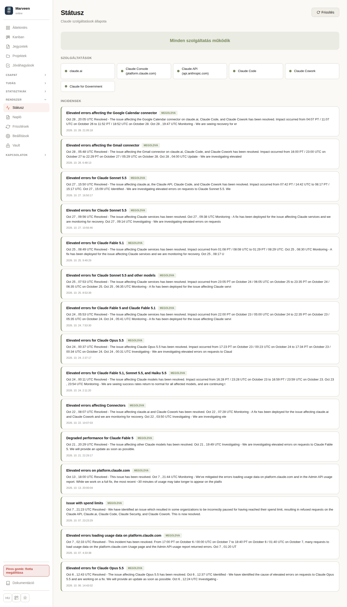
Felül egy összesített állapot (Működik / Akadozik / Ismeretlen), alatta szolgáltatásonkénti bontás, legalul a legutóbbi incidensek listája dátummal és állapottal (vizsgálat alatt / azonosítva / figyelve / megoldva).
Napló naplo
Egységes, csak-olvasható eseménynapló: mi történt a rendszerben (beállítás-változás, ötlet állapotváltás, fájl-esemény), ki és mikor tette. Auditáláshoz és nyomkövetéshez való, nem szerkeszthető felület.
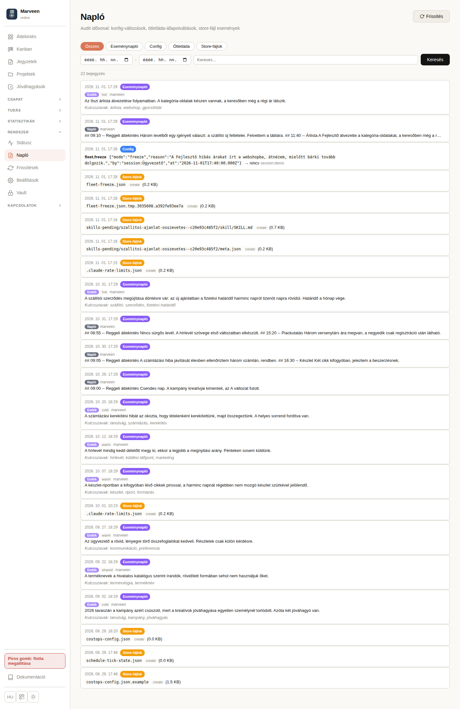
Öt forrás-fül
| Fül | Mit mutat |
|---|---|
| Összes | Minden forrás egy közös, időrendi listában. |
| Eseménynapló | Az ügynökök napi naplójának bejegyzései ("Napló" jelvénnyel) és a mentett emlékek ("Emlék" jelvénnyel, réteggel és kulcsszavakkal). Mivel a napló bejegyzései emlékként is mentődnek (lásd Memória), egy naplósor itt kétszer is megjelenhet. |
| Config | Beállítás-változások (pl. melyik kulcs milyen értékről milyenre változott, ki és mikor). A titkos értékek (pl. API kulcsok) sosem kerülnek be, csak az a tény, hogy változott valami. |
| Ötletláda | Az Ötletláda állapotváltásai (pl. "új" -> "kanbanra emelve", vagy visszafordítás). |
| Store-fájlok | A rendszer adattárolójában (nem a saját rendszerfájlokban) létrejött fájl-események, ha megállapítható, a létrehozó ügynök nevével. |
Szűrők
Dátumtartomány ("Ettől"/"Eddig", mindkettő opcionális), szabad szöveges keresés, ami a kulcs, útvonal, megjegyzés és a kezdeményező mezőkben egyszerre keres, és az Eseménynapló fülön egy Ágens mező, amivel egy ügynök bejegyzéseire szűkíthetsz. A szűrés a "Keresés" gombbal indul.
Frissítések updates
Itt derül ki, van-e újabb kiadott verzió, mi változott benne, és innen indítható el maga a frissítés.
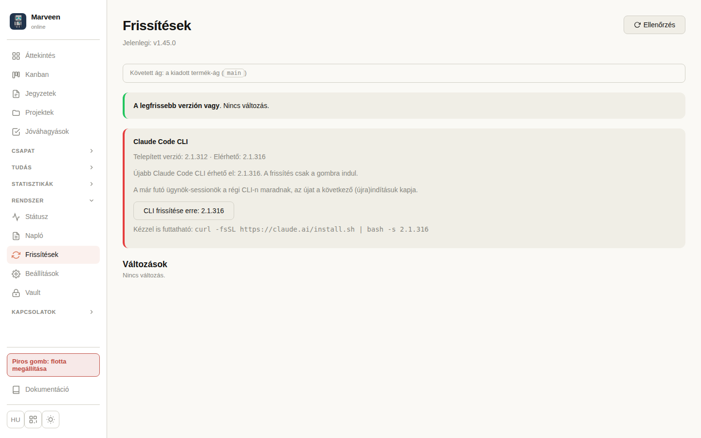
Az oldal tetején a futó verzió, alatta a legutóbbi változtatások listája. Ha a rendszer nem a hivatalos kiadási ágon fut (pl. fejlesztői ágon), erre egy külön figyelmeztető sáv hívja fel a figyelmet a felület tetején is, nemcsak ezen az oldalon.
Ellenőrzés
Lekérdezi, van-e új verzió, anélkül hogy bármit is telepítene.
Frissítés most
Csak akkor jelenik meg, ha valóban van elérhető frissítés. Megerősítést kér, mielőtt elindul.
Claude Code CLI frissítése
Külön doboz mutatja a gépre telepített Claude Code program verzióját (ezen futnak az ügynökök) és az elérhető legújabbat. Ha van újabb, egy "CLI frissítése erre: ..." gomb jelenik meg, mellette a kézzel futtatható parancs is. Régebbi, AVX utasításkészlet nélküli processzoron a legfrissebb Claude Code nem indul el, ezért ott a rendszer csak a kipróbált, ezen a gépen is működő verziót ajánlja fel, és ezt egy sor meg is mondja. Ha minden naprakész, a doboz ezt jelzi.
main), tiszta munkakönyvtárban fut le biztonságosan. Fejlesztői ágon, vagy nem szabványos telepítésen a rendszer elutasítja az automatikus frissítést, ilyenkor kézi beavatkozás kell.
Beállítások settings
A rendszer konfigurációjának központi helye. Innen módosítható a legtöbb paraméter közvetlenül a böngészőből, anélkül hogy szerverhez vagy fájlokhoz kellene hozzáférni.
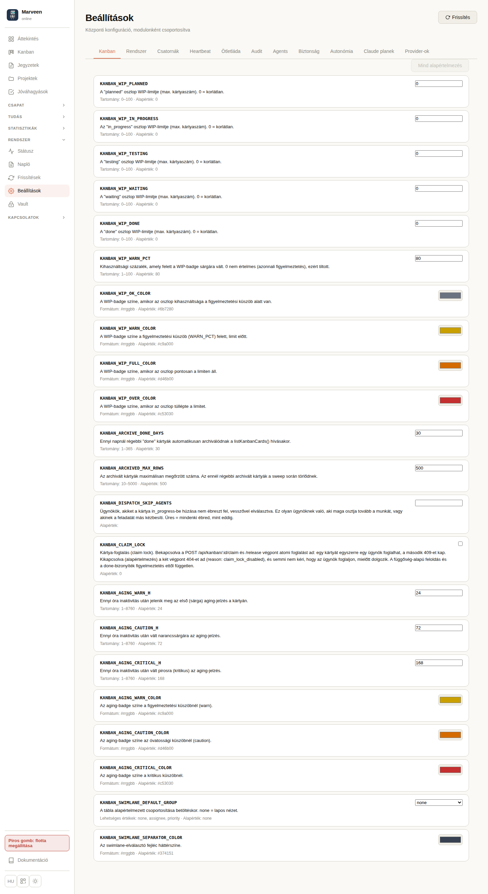
Fülek (modulok)
A beállítások funkció szerinti fülekbe vannak csoportosítva (többek között Kanban, Rendszer, Heartbeat, Audit, Csatornák, Ötletláda), plusz négy mindig jelen lévő speciális fül: Biztonság (itt van a böngészős bejelentkezés, felhasználónév + jelszó beállítása, lásd lent), Autonómia (itt állítható kategóriánként, mennyire dönthet önállóan egy ügynök, lásd a Jóváhagyások fejezetet), Claude planek és Provider-ok (mindkettő lent).
Biztonság: Dashboard belépés
A "Dashboard belépés" kártyán hozod létre a felhasználónév + jelszó belépést ("Belépés létrehozása"). Amíg ilyen nincs, a felület tetején egy sáv emlékeztet rá. Ha a böngésző a hozzáférési tokennel lépett be, a kártya ezt kiírja, és a "Belépés a dashboard-jelszóval" gombbal válthatsz jelszavas munkamenetre; néhány gazda-döntés csak így végezhető el (lásd a kézikönyv elején).
/operator). Alapból minden ki van kapcsolva, és minden jogosultságot (ügynökök indítása, főügynök újraindítása, frissítés, titkok beírása, ügynök-panel megtekintése) külön kell engedélyezni. Az üzemeltető beszélgetést, memóriát és kártyát nem lát, kivéve, ha a panel-nézetet engedélyezed: azzal a beszélgetések tartalma is látható. Az üzemeltető minden módosítása a Napló Config fülén megjelenik a kulcs nevével.
Claude planek
Itt tartod nyilván a rendszerhez rendelt Claude-előfizetéseket (planeket). Egy plan háromféleképpen jöhet létre: bejelentkezéssel (ez az alapértelmezett, lásd lent), egy beillesztett OAuth tokennel (a claude setup-token parancs kimenete), vagy egy már bejelentkezett Claude-mappára mutatva. A listában minden plan mellett a típusa (Személyes / Csapat), az, hogy mehet-e rajta csatorna (Telegram és társai), az állapota (rendben / közel a limithez / elfogyott), valamint az 5 órás és a heti keret csíkja, a nullázódás idejével. Az aktív plant egy pont jelöli.
Új plan / szerkesztés (✎)
Azonosító, címke, hitelesítési mód, típus és a csatorna-engedély megadásával. Szerkesztéskor a tokent üresen hagyva a meglévő marad, új token beillesztése lecseréli.
Felvétel bejelentkezéssel
Azonosító és címke megadása után a "Bejelentkezési link kérése" gomb egy claude.ai bejelentkezési linket ad. Megnyitod, belépsz azzal az előfizetéssel, amit fel akarsz venni, és a kapott kódot visszamásolod a "Kód beküldése" mezőbe. A link 10 percig él; a Mégse megszakítja a folyamatot.
Váltás erre a planre
Minden nem aktív, csatornára engedélyezett plan mellett megjelenik.
Ellenőrzés most
Élőben lekérdezi a plan aktuális keret-felhasználását. Csak tokennel felvett plannél működik, és egy plant percenként legfeljebb egyszer lehet ellenőrizni.
Törlés (×)
A lista alatt két kapcsoló áll. Az automata kulcs-rotáció (CLAUDE_ROTATION_ENABLED) azt dönti el, hogy ha a főügynök aktív előfizetése kifogy, a rendszer magától átváltson-e egy másik regisztrált planre; ehhez legalább két plan kell. A flotta-rotáció (CLAUDE_ROTATION_FLEET) azt, hogy ilyenkor a beosztott ügynökök is kövessék-e.
Ha az automata rotáció be van kapcsolva, de valami miatt még nem tud működni (például nincs legalább két csatornára engedélyezett plan, vagy nincs kijelölt aktív plan), a lista felett egy piros doboz sorolja fel az okokat. Ez csak tájékoztatás, magától nem változtat semmit.
MAIN_AGENT_ISOLATED_CONFIG=1 beállítás és legalább két regisztrált plan; a flotta-rotáció csak bekapcsolt automata rotáció mellett hat, és csak tokennel felvett célplannél. Mappára mutató plan élő ellenőrzésére a dashboard nem képes, mert annak hitelesítő adatait nem olvassa.
Provider-ok
Egyéni, Anthropic-kompatibilis modell-szolgáltatók (provider-ok) nyilvántartása: név, belső azonosító, cím (Base URL), hitelesítési mód, és ha kell, a Vault-kulcs neve, amelyben a hozzáférési kulcs van. Az itt felvett provider az Ügynökök modellválasztójában az "Egyéni provider" csoportban jelenik meg. Csak az Anthropic Messages API-val kompatibilis végpont működik; egy tisztán OpenAI-formátumú végponthoz fordító proxy kellene, ez nem támogatott.
Egy érték módosítása
Minden sor a kulcs nevét, rövid leírását, és egy szerkeszthető mezőt mutat (szám, szín vagy legördülő lista, a típustól függően). Módosításkor a sor "piszkosnak" jelölődik, az oldal alján egy sáv jelzi, hány módosítás vár mentésre.
Mentés
Az összes piszkos sort egyszerre menti.
Visszaállítás
Minden mentetlen módosítást visszavon, az utoljára betöltött értékekre áll vissza.
Alapértelmezés és Mind alapértelmezés
Ami itt el van mentve, az mellett "felülírva" jelölés és egy "Alapértelmezés" gomb áll; a fül tetején a "Mind alapértelmezés (N)" gomb a fül összes mentett értékét egyszerre állítja vissza. Mindkettő előbb egy ablakban megmutatja, melyik érték mire változik. (Ez nem azonos a fenti Visszaállítás gombbal, ami csak a még nem mentett módosításokat dobja el.)
.env fájlban megadott értékre, vagy ha ott sincs, a gyári alapértékre. Ez egy korábban szándékosan szigorított biztonsági beállítást is visszalazíthat, ezért a listát olvasd el. A változás a Napló Config fülén megjelenik..env fájlja, majd a beépített alapérték. A titkos jellegű kulcsok (pl. API-kulcsok) értéke sosem jelenik meg a felületen, csak az, hogy be van-e állítva. Biztonsági beállítás lazítása (például a Vault-hozzáférés szabályának visszaállítása naplózó módba) csak jelszavas belépéssel menthető. A Rendszer fülön több megőrzési beállítás is van (beszélgetés-napló, ügynök-üzenetek, eszközhívás-napló); ezek alapból 0-n állnak, vagyis semmit nem törölnek. Ha egy napszámot megadsz, egy napi takarítás onnantól véglegesen törli az annál régebbi sorokat.
Vault vault
Titkosított tároló API-kulcsoknak, jelszavaknak és SSH hozzáféréseknek, amiket a rendszer különböző integrációi (pl. MCP szerverek, távoli ügynökök) használnak. A kulcsok kizárólag a helyi gépen tárolódnak, titkosítva (AES-256-GCM), és sosem hagyják el a rendszert.
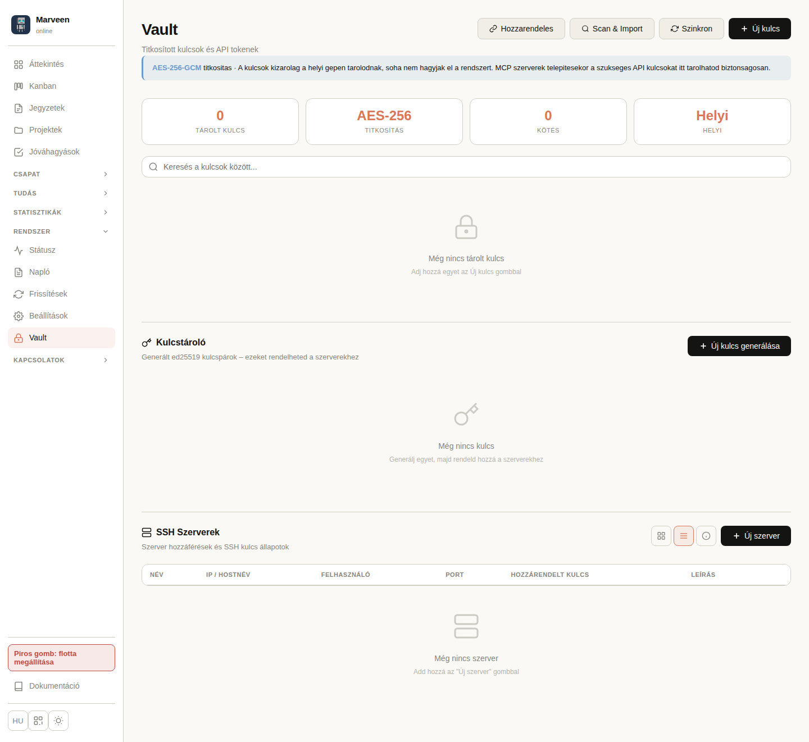
Kulcsok
Új kulcs
Manuálisan felveszel egy nevet és egy titkos értéket.
Törlés
A kulcs kártyáján, megerősítés után.
Scan & Import
Átvizsgálja a rendszeren található MCP-konfigurációs fájlokat, és megkeresi bennük a nyílt szövegként ottfelejtett, érzékenynek tűnő értékeket (pl. API-kulcsokat).
Hozzárendelés és Szinkron
A "Hozzárendelés" egy Vault-kulcsot köt össze egy adott MCP szerver konfigurációjával. A "Szinkron" ezután a kötések alapján visszaírja a Vault aktuális értékeit a szerverek .mcp.json fájljaiba.
Távoli gépek (SSH)
Külön szekcióban SSH-szerverek és -kulcsok is kezelhetők, amiket a távoli ügynökök eléréséhez használ a rendszer (lásd Ügynökök). Hozzáadás, szerkesztés és törlés ugyanúgy működik, mint a sima kulcsoknál, törléskor megerősítéssel.
VAULT_ACL_MODE dönti el, hogy ez csak napló legyen ("audit", az alapértelmezés), vagy szabály is ("enforce"): ekkor egy ügynök csak a neki kiosztott kulcsokat kapja meg (store/vault-acl.json). Mivel minden ügynök ugyanazon a rendszerfelhasználón fut, ez nyomkövetés és hozzáférési szabály, nem teljes elzárás. Az "enforce" visszakapcsolása "audit"-ra csak jelszavas belépéssel menthető.
MCP connectors
Az ügynökök által elérhető külső eszközök (MCP szerverek) áttekintése és kezelése: mit tud elérni egy ügynök a beszélgetésen és a saját tudásán túl, pl. naptárt, email-fiókot, üzleti API-kat.
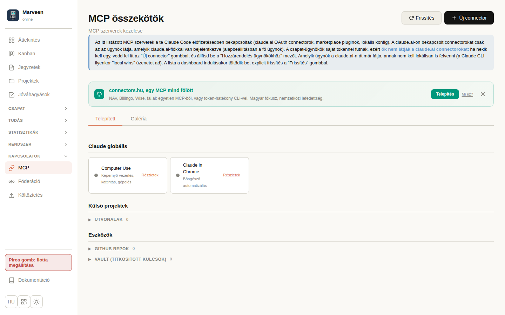
Az itt listázott MCP-k a Claude Code-hoz kapcsolt szerverek: a claude.ai fiókodon engedélyezett integrációk, a marketplace-ből telepített kiegészítők, és a helyi konfigurációban felvettek. A claude.ai fiókon engedélyezett integrációkat csak az az ügynök látja, amelyik ezzel a claude.ai fiókkal van bejelentkezve (alapesetben a főügynök). A beosztott ügynökök saját tokennel futnak, ezért nekik ezek nem érhetők el: ha valamelyiküknek kell egy ilyen integráció, vedd fel itt helyi connectorként, és rendeld hozzá.
Új connector
Kézzel felvehetsz egy MCP szervert (pl. egy saját vagy harmadik féltől kapott integrációt), és kiválaszthatod, mely ügynökök férjenek hozzá.
Törlés
A connector részletező nézetében, megerősítés után.
GitHub repók telepítése
A "GitHub repok" szakaszban egy GitHub-on közzétett MCP szerver a címe alapján telepíthető. Telepítés előtt mindig rákérdez. Az "npm install scriptek futtatása" jelölő alapból üres.
Föderáció federation
Két különálló Marveen-telepítés (pl. egy irodai és egy otthoni gépen futó) összekötése, hogy a két rendszer ügynökei üzenetet válthassanak és feladatot delegálhassanak egymásnak, miközben mindkét rendszer önálló marad. Alapból teljesen ki van kapcsolva, bekapcsolásig a rendszer úgy viselkedik, mintha ez a funkció nem is létezne.
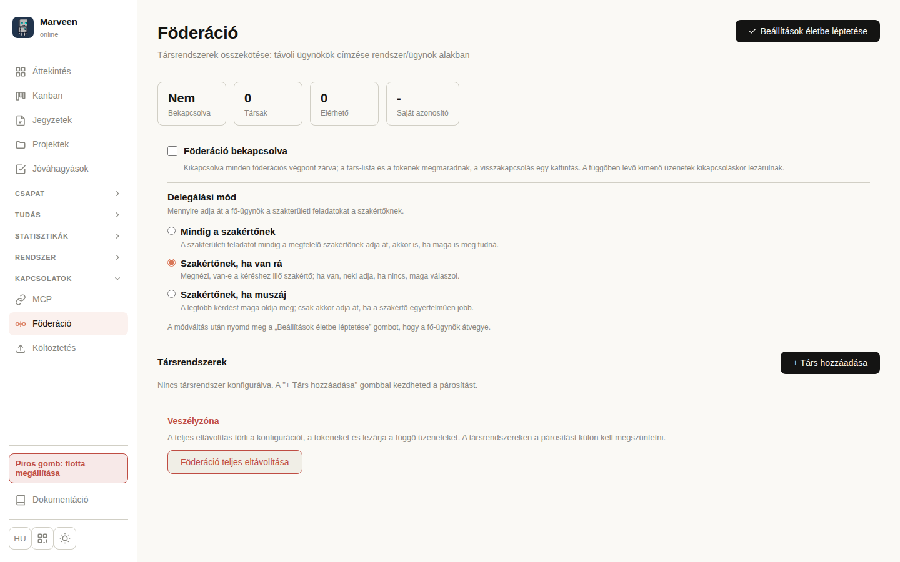
Fő kapcsoló
Társ hozzáadása (párosítás)
Mindkét gépen fel kell venni a másikat: egy azonosítót és a másik rendszer címét adod meg. A felület ekkor generál egy tokent, amit a másik gép oldalán be kell másolni, és fordítva, a másik gép tokenjét ide. Csak a kölcsönös token-csere után válik a kapcsolat élővé.
Delegálási mód
Azt szabályozza, mennyire adja át a fő-ügynök a szakterületi kéréseket a társrendszer megfelelő szakértőjének: "Mindig a szakértőnek", "Szakértőnek, ha van rá" (ez az alapértelmezett), vagy "Szakértőnek, ha muszáj".
Beállítások életbe léptetése
Egy már futó rendszeren a társ- vagy beállítás-változás nem lép azonnal érvénybe, amíg a fő-ügynök munkamenete újra nem indul.
Biztonsági keretezés (mindig érvényes)
A társrendszertől érkező tartalmat a fogadó ügynök mindig adatként kezeli, sosem közvetlen utasításként, akkor is, ha egyébként megengedő az együttműködési beállítás. Ez nem módosítható és nem kapcsolható ki a felületről: egy visszafordíthatatlan vagy kifelé irányuló művelet (törlés, fizetés, publikálás) a társrendszer kérésére is a rendszergazda jóváhagyását igényli.
Veszélyzóna: teljes eltávolítás
Költöztetés migrate
Korábbi, más AI-asszisztens rendszerből (nem Marveen-fleották közötti költözés, hanem egy másik termékből) származó anyagok (személyiség, memória, ütemezés, konfiguráció) átvétele egy Marveen-ügynökbe. Ez különbözik az Ügynökök oldal exportálás/importálás funkciójától, ami két Marveen-telepítés közötti átvitelre való.
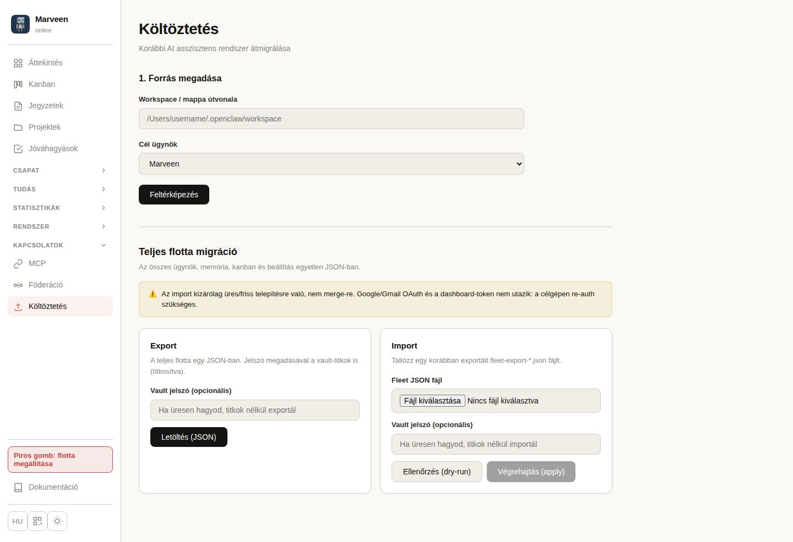
1. lépés: forrás megadása
Megadod a korábbi rendszer munkakönyvtárának útvonalát, és kiválasztod, melyik Marveen-ügynökbe kerüljön az átvett tartalom.
Feltérképezés
2. lépés: találatok
A talált elemek típus és méret szerint listázva, összesítő számokkal (összesen, memória, személyiség/profil, konfiguráció).
Költöztetés indítása
Piros gomb: flotta megállítása
Vészfék az egész ügynök-flottára, ha valami elszabadult (például egy ügynök sorozatban rossz műveleteket végez), és azonnal meg akarod állítani az összeset. A bal oldali menü alján, a Dokumentáció felett áll, minden oldalról elérhető.
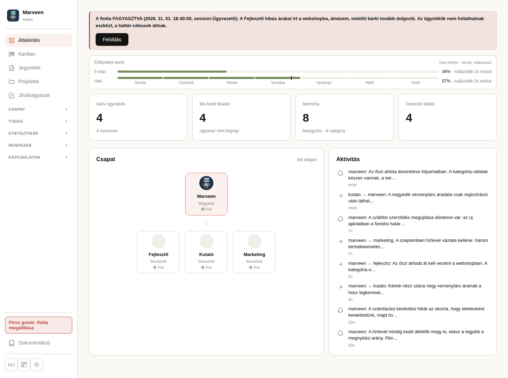
Megállítás
A gomb előbb megkérdezi, miért állítod meg a flottát (kötelező megadni, a gazda is megkapja). Ha Mégse-t nyomsz vagy üresen hagyod, nem történik semmi. Utána egy második kérdés dönt a módról: OK = leállítás, Mégse = csak fagyasztás. Figyelem: ennél a második kérdésnél a Mégse nem szakítja meg a műveletet, hanem a kíméletesebb módot választja.
| Mód | Mi történik |
|---|---|
| Fagyasztás | Minden ügynök munkamenete él és megtartja a beszélgetését, de egyetlen eszközt sem futtathat (fájlírás, parancs, levél, üzenetküldés): minden ilyen kísérletet elutasít a rendszer. Leállnak a háttér-folyamatok is: az ütemezett feladatok, az üzenet-kézbesítés, az automatikus újraindítás. |
| Leállítás | Mindez, és a futó beosztott ügynökök munkamenete le is áll. A főügynök ilyenkor sem áll le, csak fagyasztva van. |
Feloldás
Amíg a flotta áll, minden oldal tetején egy piros sáv mutatja, ki, mikor és miért állította meg, egy "Feloldás" gombbal.
store/fleet-freeze.json fájl: ha a Dashboard nem érhető el, ennek a fájlnak a törlése a gépen is feloldja a flottát (a leállított ügynököket ilyenkor kézzel kell elindítani).
Dokumentáció docs
A rendszer beépített, böngészőben olvasható dokumentáció-könyvtára. Ezt a kézikönyvet leszámítva itt találod a mélyebb, technikai jellegű leírásokat is, amiket ez a kézikönyv szándékosan nem másolt be szó szerint.
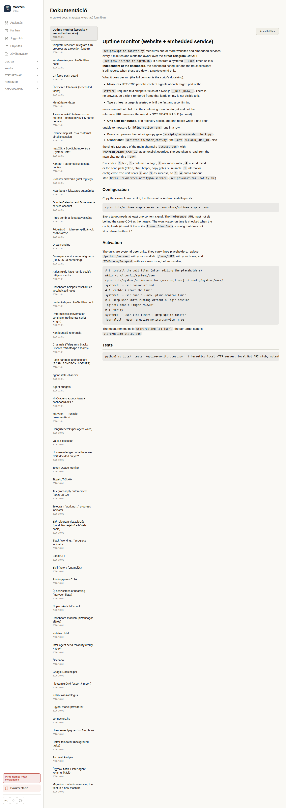
Bal oldalon a rendelkezésre álló dokumentumok listája, egy tétel megnyitására a jobb oldalon jelenik meg a megformázott tartalom, ahonnan az eredeti fájl le is tölthető.